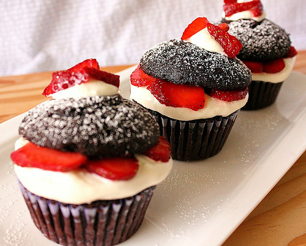
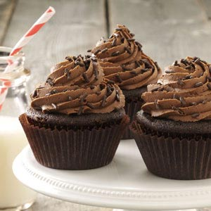

Contacts
8-800-555-55-55
info@bestcupcakes.com
Strawberry Cupcakes
 These delectable cupcakes will melt in your mouth. Serve these delicious STRAWBERRY CUPCAKES at your next party, social, family dinner, gathering or celebration! The Best Strawberry Cupcake Recipe with Strawberry Buttercream Frosting Yields 12 cupcakesIngredients:
2 tbsp strawberry jam or preserves (preferably seedless for frosting)
1/4 cup chopped fresh strawberries
1/2 tsp vanilla extract
1 1/4 cups flour
1/4 tsp salt
1 1/4 tsp baking powder
3/4 cup of sugar
3 egg whites
1/2 cup of unsalted butter, softened
4 drops pink food coloring
1/3 cup milk
Instructions
- Preheat oven to 350 degrees Fahrenheit. In a small bowl, mix strawberry preserves and chopped strawberries. In another bowl, stir together flour, baking powder and salt.
- In a third bowl, beat sugar and butter together until fluffy (about 3 minutes using a hand mixer). Add egg whites, vanilla, and food coloring and beat until well incorporated. Add flour mixture and milk, beating on low speed until mixed. Fold in strawberry mixture.
- Fill cupcake liners in cupcake pan 3/4 full. Bake for 25 minutes, or until toothpick inserted into center of cupcake comes out clean. Let the cupcakes cool in the pan for five minutes then remove the cupcakes onto a cooling rack and let cool for 45 minutes.
Ingredients:
1/3 cup seedless strawberry jam or preserves
red food coloring
3 cups powdered sugar
1 cup softened butter
1 tsp vanilla extract
2 tbsp whipping cream
Instructions
- Mix together sugar and butter in a bowl with a hand mixer on low speed until well incorporated (about 3 minutes). Add the vanilla extract and whipping cream and beat on medium speed for about 1 minute. Mix in 1/3 cup seedless strawberry preserves or jam and 6 drops of red or pink food coloring.
- Pipe or spread frosting onto cooled cupcakes. Garnish with fresh whole strawberries and sprinkles if desired.
Vanilla Cupcakes
 Vanilla cupcakes are the perfect base for myriad fillings and frostings. For the richest, fullest flavor and fragrance, use pure vanilla extract. Or, better yet, if you are willing to splurge, add the seeds from a vanilla bean to the batter along with the extract.
Vanilla cupcakes are the perfect base for myriad fillings and frostings. For the richest, fullest flavor and fragrance, use pure vanilla extract. Or, better yet, if you are willing to splurge, add the seeds from a vanilla bean to the batter along with the extract.
Ingredients:
1 1/4 cups all-purpose flour
1 1/2 tsp. baking powder
1/4 tsp. salt
3/4 cup sugar
6 Tbs. (3/4 stick) unsalted butter, at room temperature
1 whole egg plus 1 egg white, at room temperature
1 tsp. vanilla extract
1/2 cup milk
Vanilla buttercream for frosting cupcakes (see related recipe at left)
Nonpareils and colored sugars for garnish (optional)
Instructions
- Preheat an oven to 350°F. Line a standard 12-cup muffin pan with paper or foil liners.
- In a bowl, whisk together the flour, baking powder and salt. In a large bowl, using an electric mixer, beat together the sugar and butter on medium-high speed until light and fluffy, 2 to 3 minutes. Reduce the speed to low and add the egg and egg white one at a time, beating well after each addition, then beat in the vanilla. Add the flour mixture in 3 additions, alternating with the milk in 2 additions, beating until just combined; scrape down the sides of the bowl as needed. Increase the speed to medium-high and beat just until no traces of flour remain, about 30 seconds; do not overbeat.
- Divide the batter evenly among the prepared muffin cups, filling each about three-fourths full. Bake until the cupcakes are lightly golden on top and a toothpick inserted into the center of a cupcake comes out clean, 18 to 20 minutes. Transfer the pan to a wire rack and let cool for 5 minutes. Then transfer the cupcakes to the rack and let cool completely, about 1 hour.
- Frost the cupcakes with the buttercream. (The frosted cupcakes can be refrigerated in an airtight container for up to 3 days; bring to room temperature before finishing.) Garnish the cupcakes with nonpareils and colored sugars and serve. Makes 12 cupcakes.
Chocolate Cupcakes
Ingredients
1 cup all-purpose flour
1 cup granulated sugar
½ cup cocoa
1 teaspoon baking powder
½ teaspoon baking soda
½ teaspoon salt
½ teaspoon espresso powder
½ cup milk
¼ cup vegetable oil
1 egg
½ teaspoon vanilla
½ cup boiling water
1/2 Vanilla Buttercream Frosting Recipe
Instructions
- Preheat oven to 325º F.
- Place cupcake liners in muffin tin. Spray lightly with cooking spray.
- Add flour, sugar, cocoa, baking powder, baking soda, salt and espresso powder to a large bowl or the bowl of a stand mixer. Whisk through to combine or, using your paddle attachment, stir through flour mixture until combined well.
- Add milk, vegetable oil, eggs, and vanilla to flour mixture and mix together on medium speed until well combined. Reduce speed and carefully add boiling water to the cake batter. Beat on high speed for about 1 minute to add air to the batter.
- Evenly distribute cake batter. Each cupcake liner should be about ¾ths full.
- Place in the oven and bake 12-15 minutes or until a toothpick inserted in the center comes out clean.
- Remove from the oven and allow the cupcakes to cool completely.
- Prepare Buttercream Frosting according to instructions.

You can order our Chocolate Brownies for just $2,00 each!

Our Master Class is for beginners and starts each Sunday at 11 a.m.

Only this Weekend! We have our first BAKING PARTY for our friends! You can show how good you are at cooking!